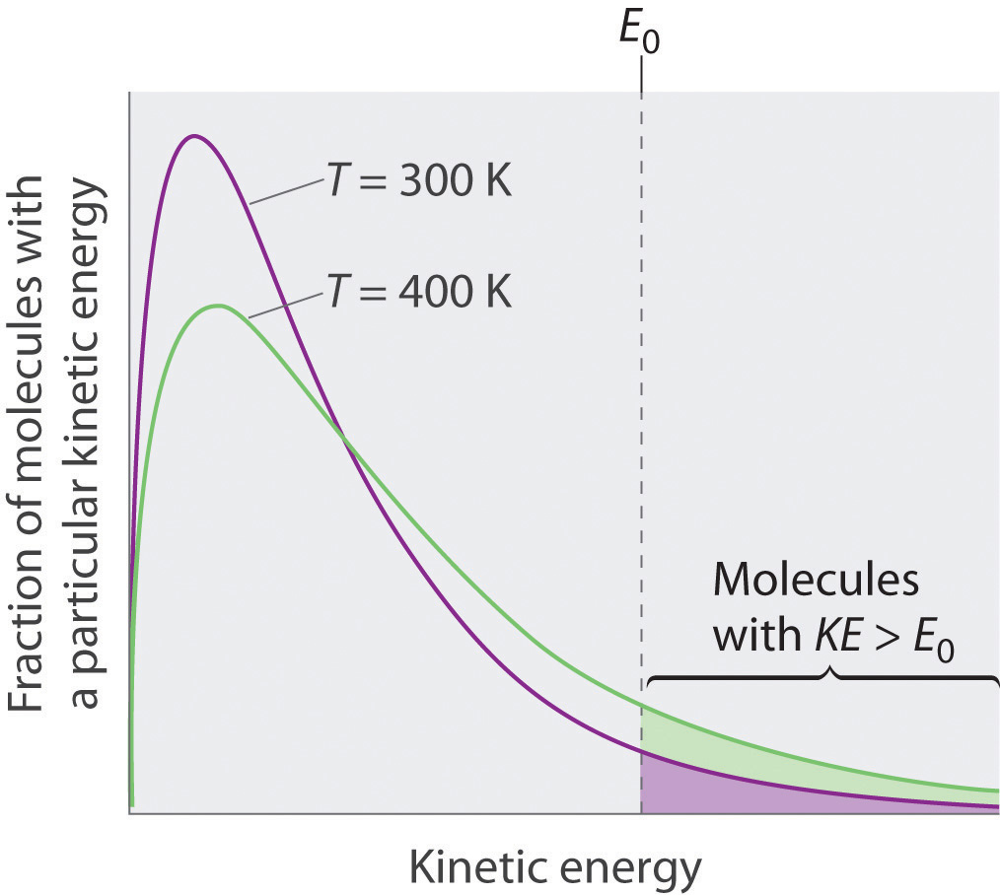
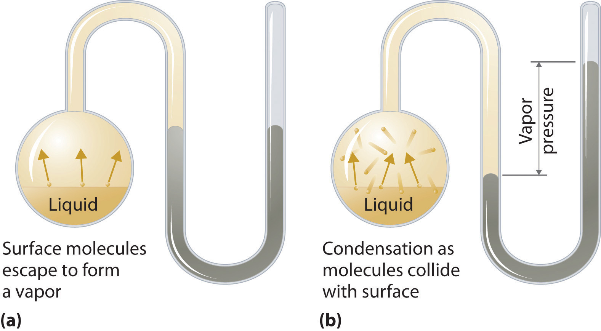
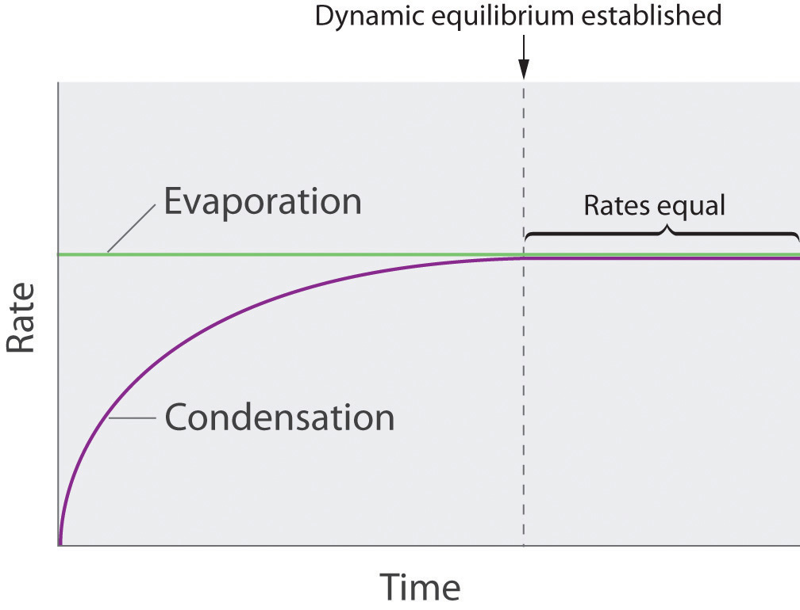
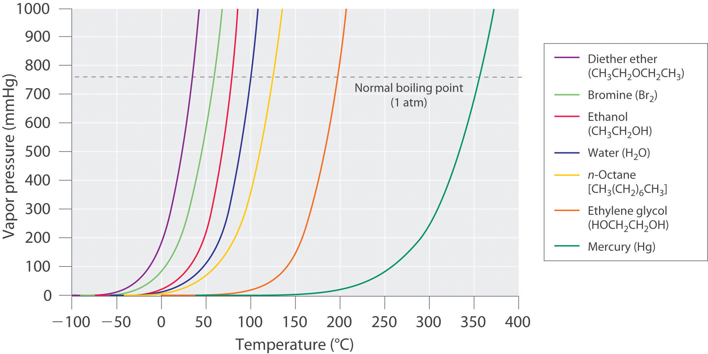

Nearly all of us have heated a pan of water with the lid in place and shortly thereafter heard the sounds of the lid rattling and hot water spilling onto the stovetop. When a liquid is heated, its molecules obtain sufficient kinetic energy to overcome the forces holding them in the liquid and they escape into the gaseous phase. By doing so, they generate a population of molecules in the vapor phase above the liquid that produces a pressure—the vapor pressureThe pressure created over a liquid by the molecules of a liquid substance that have enough kinetic energy to escape to the vapor phase. of the liquid. In the situation we described, enough pressure was generated to move the lid, which allowed the vapor to escape. If the vapor is contained in a sealed vessel, however, such as an unvented flask, and the vapor pressure becomes too high, the flask will explode (as many students have unfortunately discovered). In this section, we describe vapor pressure in more detail and explain how to quantitatively determine the vapor pressure of a liquid.
Because the molecules of a liquid are in constant motion, we can plot the fraction of molecules with a given kinetic energy (KE) against their kinetic energy to obtain the kinetic energy distribution of the molecules in the liquid (Figure 11.13 "The Distribution of the Kinetic Energies of the Molecules of a Liquid at Two Temperatures"), just as we did for a gas (Figure 10.19 "The Wide Variation in Molecular Speeds Observed at 298 K for Gases with Different Molar Masses"). As for gases, increasing the temperature increases both the average kinetic energy of the particles in a liquid and the range of kinetic energy of the individual molecules. If we assume that a minimum amount of energy (E0) is needed to overcome the intermolecular attractive forces that hold a liquid together, then some fraction of molecules in the liquid always has a kinetic energy greater than E0. The fraction of molecules with a kinetic energy greater than this minimum value increases with increasing temperature. Any molecule with a kinetic energy greater than E0 has enough energy to overcome the forces holding it in the liquid and escape into the vapor phase. Before it can do so, however, a molecule must also be at the surface of the liquid, where it is physically possible for it to leave the liquid surface; that is, only molecules at the surface can undergo evaporation (or vaporization)The physical process by which atoms or molecules in the liquid phase enter the gas or vapor phase., where molecules gain sufficient energy to enter a gaseous state above a liquid’s surface, thereby creating a vapor pressure.
Figure 11.13 The Distribution of the Kinetic Energies of the Molecules of a Liquid at Two Temperatures
Just as with gases, increasing the temperature shifts the peak to a higher energy and broadens the curve. Only molecules with a kinetic energy greater than E0 can escape from the liquid to enter the vapor phase, and the proportion of molecules with KE > E0 is greater at the higher temperature.
To understand the causes of vapor pressure, consider the apparatus shown in Figure 11.14 "Vapor Pressure". When a liquid is introduced into an evacuated chamber (part (a) in Figure 11.14 "Vapor Pressure"), the initial pressure above the liquid is approximately zero because there are as yet no molecules in the vapor phase. Some molecules at the surface, however, will have sufficient kinetic energy to escape from the liquid and form a vapor, thus increasing the pressure inside the container. As long as the temperature of the liquid is held constant, the fraction of molecules with KE > E0 will not change, and the rate at which molecules escape from the liquid into the vapor phase will depend only on the surface area of the liquid phase.
Figure 11.14 Vapor Pressure
(a) When a liquid is introduced into an evacuated chamber, molecules with sufficient kinetic energy escape from the surface and enter the vapor phase, causing the pressure in the chamber to increase. (b) When sufficient molecules are in the vapor phase for a given temperature, the rate of condensation equals the rate of evaporation (a steady state is reached), and the pressure in the container becomes constant.
As soon as some vapor has formed, a fraction of the molecules in the vapor phase will collide with the surface of the liquid and reenter the liquid phase in a process known as condensationThe physical process by which atoms or molecules in the vapor phase enter the liquid phase. (part (b) in Figure 11.14 "Vapor Pressure"). As the number of molecules in the vapor phase increases, the number of collisions between vapor-phase molecules and the surface will also increase. Eventually, a steady state will be reached in which exactly as many molecules per unit time leave the surface of the liquid (vaporize) as collide with it (condense). At this point, the pressure over the liquid stops increasing and remains constant at a particular value that is characteristic of the liquid at a given temperature. The rates of evaporation and condensation over time for a system such as this are shown graphically in Figure 11.15 "The Relative Rates of Evaporation and Condensation as a Function of Time after a Liquid Is Introduced into a Sealed Chamber".
Figure 11.15 The Relative Rates of Evaporation and Condensation as a Function of Time after a Liquid Is Introduced into a Sealed Chamber
The rate of evaporation depends only on the surface area of the liquid and is essentially constant. The rate of condensation depends on the number of molecules in the vapor phase and increases steadily until it equals the rate of evaporation.
Two opposing processes (such as evaporation and condensation) that occur at the same rate and thus produce no net change in a system, constitute a dynamic equilibriumA state in which two opposing processes occur at the same rate, thus producing no net change in the system.. In the case of a liquid enclosed in a chamber, the molecules continuously evaporate and condense, but the amounts of liquid and vapor do not change with time. The pressure exerted by a vapor in dynamic equilibrium with a liquid is the equilibrium vapor pressureThe pressure exerted by a vapor in dynamic equilibrium with its liquid. of the liquid.
If a liquid is in an open container, however, most of the molecules that escape into the vapor phase will not collide with the surface of the liquid and return to the liquid phase. Instead, they will diffuse through the gas phase away from the container, and an equilibrium will never be established. Under these conditions, the liquid will continue to evaporate until it has “disappeared.” The speed with which this occurs depends on the vapor pressure of the liquid and the temperature. Volatile liquidsA liquid with a relatively high vapor pressure. have relatively high vapor pressures and tend to evaporate readily; nonvolatile liquidsA liquid with a relatively low vapor pressure. have low vapor pressures and evaporate more slowly. Although the dividing line between volatile and nonvolatile liquids is not clear-cut, as a general guideline, we can say that substances with vapor pressures greater than that of water (Table 11.4 "Surface Tension, Viscosity, Vapor Pressure (at 25°C Unless Otherwise Indicated), and Normal Boiling Points of Common Liquids") are relatively volatile, whereas those with vapor pressures less than that of water are relatively nonvolatile. Thus diethyl ether (ethyl ether), acetone, and gasoline are volatile, but mercury, ethylene glycol, and motor oil are nonvolatile.
The equilibrium vapor pressure of a substance at a particular temperature is a characteristic of the material, like its molecular mass, melting point, and boiling point (Table 11.4 "Surface Tension, Viscosity, Vapor Pressure (at 25°C Unless Otherwise Indicated), and Normal Boiling Points of Common Liquids"). It does not depend on the amount of liquid as long as at least a tiny amount of liquid is present in equilibrium with the vapor. The equilibrium vapor pressure does, however, depend very strongly on the temperature and the intermolecular forces present, as shown for several substances in Figure 11.16 "The Vapor Pressures of Several Liquids as a Function of Temperature". Molecules that can hydrogen bond, such as ethylene glycol, have a much lower equilibrium vapor pressure than those that cannot, such as octane. The nonlinear increase in vapor pressure with increasing temperature is much steeper than the increase in pressure expected for an ideal gas over the corresponding temperature range. The temperature dependence is so strong because the vapor pressure depends on the fraction of molecules that have a kinetic energy greater than that needed to escape from the liquid, and this fraction increases exponentially with temperature. As a result, sealed containers of volatile liquids are potential bombs if subjected to large increases in temperature. The gas tanks on automobiles are vented, for example, so that a car won’t explode when parked in the sun. Similarly, the small cans (1–5 gallons) used to transport gasoline are required by law to have a pop-off pressure release.
Figure 11.16 The Vapor Pressures of Several Liquids as a Function of Temperature
The point at which the vapor pressure curve crosses the P = 1 atm line (dashed) is the normal boiling point of the liquid.
Volatile substances have low boiling points and relatively weak intermolecular interactions; nonvolatile substances have high boiling points and relatively strong intermolecular interactions.
The exponential rise in vapor pressure with increasing temperature in Figure 11.16 "The Vapor Pressures of Several Liquids as a Function of Temperature" allows us to use natural logarithms to express the nonlinear relationship as a linear one.For a review of natural logarithms, refer to Essential Skills 6 in Section 11.9 "Essential Skills 6".
Equation 11.1
where ln P is the natural logarithm of the vapor pressure, ΔHvap is the enthalpy of vaporization, R is the universal gas constant [8.314 J/(mol·K)], T is the temperature in kelvins, and C is the y-intercept, which is a constant for any given line. A plot of ln P versus the inverse of the absolute temperature (1/T) is a straight line with a slope of −ΔHvap/R. Equation 11.1, called the Clausius–Clapeyron equationA linear relationship that expresses the nonlinear relationship between the vapor pressure of a liquid and temperature: ln where is pressure, is the heat of vaporization, is the universal gas constant, is the absolute temperature, and C is a constant. The Clausius–Clapeyron equation can be used to calculate the heat of vaporization of a liquid from its measured vapor pressure at two or more temperatures., can be used to calculate the ΔHvap of a liquid from its measured vapor pressure at two or more temperatures. The simplest way to determine ΔHvap is to measure the vapor pressure of a liquid at two temperatures and insert the values of P and T for these points into Equation 11.2, which is derived from the Clausius–Clapeyron equation:
Equation 11.2
Conversely, if we know ΔHvap and the vapor pressure P1 at any temperature T1, we can use Equation 11.2 to calculate the vapor pressure P2 at any other temperature T2, as shown in Example 6.
The experimentally measured vapor pressures of liquid Hg at four temperatures are listed in the following table:
| T (°C) | 80.0 | 100 | 120 | 140 |
| P (torr) | 0.0888 | 0.2729 | 0.7457 | 1.845 |
From these data, calculate the enthalpy of vaporization (ΔHvap) of mercury and predict the vapor pressure of the liquid at 160°C. (Safety note: mercury is highly toxic; when it is spilled, its vapor pressure generates hazardous levels of mercury vapor.)
Given: vapor pressures at four temperatures
Asked for: ΔHvap of mercury and vapor pressure at 160°C
Strategy:
A Use Equation 11.2 to obtain ΔHvap directly from two pairs of values in the table, making sure to convert all values to the appropriate units.
B Substitute the calculated value of ΔHvap into Equation 11.2 to obtain the unknown pressure (P2).
Solution:
A The table gives the measured vapor pressures of liquid Hg for four temperatures. Although one way to proceed would be to plot the data using Equation 11.1 and find the value of ΔHvap from the slope of the line, an alternative approach is to use Equation 11.2 to obtain ΔHvap directly from two pairs of values listed in the table, assuming no errors in our measurement. We therefore select two sets of values from the table and convert the temperatures from degrees Celsius to kelvins because the equation requires absolute temperatures. Substituting the values measured at 80.0°C (T1) and 120.0°C (T2) into Equation 11.2 gives
B We can now use this value of ΔHvap to calculate the vapor pressure of the liquid (P2) at 160.0°C (T2):
Using the relationship eln x = x, we have
At 160°C, liquid Hg has a vapor pressure of 4.21 torr, substantially greater than the pressure at 80.0°C, as we would expect.
Exercise
The vapor pressure of liquid nickel at 1606°C is 0.100 torr, whereas at 1805°C, its vapor pressure is 1.000 torr. At what temperature does the liquid have a vapor pressure of 2.500 torr?
Answer: 1896°C
As the temperature of a liquid increases, the vapor pressure of the liquid increases until it equals the external pressure, or the atmospheric pressure in the case of an open container. Bubbles of vapor begin to form throughout the liquid, and the liquid begins to boil. The temperature at which a liquid boils at exactly 1 atm pressure is the normal boiling pointThe temperature at which a substance boils at a pressure of 1 atm. of the liquid. For water, the normal boiling point is exactly 100°C. The normal boiling points of the other liquids in Figure 11.16 "The Vapor Pressures of Several Liquids as a Function of Temperature" are represented by the points at which the vapor pressure curves cross the line corresponding to a pressure of 1 atm. Although we usually cite the normal boiling point of a liquid, the actual boiling point depends on the pressure. At a pressure greater than 1 atm, water boils at a temperature greater than 100°C because the increased pressure forces vapor molecules above the surface to condense. Hence the molecules must have greater kinetic energy to escape from the surface. Conversely, at pressures less than 1 atm, water boils below 100°C.
Typical variations in atmospheric pressure at sea level are relatively small, causing only minor changes in the boiling point of water. For example, the highest recorded atmospheric pressure at sea level is 813 mmHg, recorded during a Siberian winter; the lowest sea-level pressure ever measured was 658 mmHg in a Pacific typhoon. At these pressures, the boiling point of water changes minimally, to 102°C and 96°C, respectively. At high altitudes, on the other hand, the dependence of the boiling point of water on pressure becomes significant. Table 11.5 "The Boiling Points of Water at Various Locations on Earth" lists the boiling points of water at several locations with different altitudes. At an elevation of only 5000 ft, for example, the boiling point of water is already lower than the lowest ever recorded at sea level. The lower boiling point of water has major consequences for cooking everything from soft-boiled eggs (a “three-minute egg” may well take four or more minutes in the Rockies and even longer in the Himalayas) to cakes (cake mixes are often sold with separate high-altitude instructions). Conversely, pressure cookers, which have a seal that allows the pressure inside them to exceed 1 atm, are used to cook food more rapidly by raising the boiling point of water and thus the temperature at which the food is being cooked.
As pressure increases, the boiling point of a liquid increases and vice versa.
Table 11.5 The Boiling Points of Water at Various Locations on Earth
| Place | Altitude above Sea Level (ft) | Atmospheric Pressure (mmHg) | Boiling Point of Water (°C) |
|---|---|---|---|
| Mt. Everest, Nepal/Tibet | 29,028 | 240 | 70 |
| Bogota, Colombia | 11,490 | 495 | 88 |
| Denver, Colorado | 5280 | 633 | 95 |
| Washington, DC | 25 | 759 | 100 |
| Dead Sea, Israel/Jordan | −1312 | 799 | 101.4 |
Use Figure 11.16 "The Vapor Pressures of Several Liquids as a Function of Temperature" to estimate the following.
Given: data in Figure 11.16 "The Vapor Pressures of Several Liquids as a Function of Temperature", pressure, and boiling point
Asked for: corresponding boiling point and pressure
Strategy:
A To estimate the boiling point of water at 1000 mmHg, refer to Figure 11.16 "The Vapor Pressures of Several Liquids as a Function of Temperature" and find the point where the vapor pressure curve of water intersects the line corresponding to a pressure of 1000 mmHg.
B To estimate the pressure required for mercury to boil at 250°C, find the point where the vapor pressure curve of mercury intersects the line corresponding to a temperature of 250°C.
Solution:
Exercise
Use the data in Figure 11.16 "The Vapor Pressures of Several Liquids as a Function of Temperature" to estimate the following.
Answer:
Because the molecules of a liquid are in constant motion and possess a wide range of kinetic energies, at any moment some fraction of them has enough energy to escape from the surface of the liquid to enter the gas or vapor phase. This process, called vaporization or evaporation, generates a vapor pressure above the liquid. Molecules in the gas phase can collide with the liquid surface and reenter the liquid via condensation. Eventually, a steady state is reached in which the number of molecules evaporating and condensing per unit time is the same, and the system is in a state of dynamic equilibrium. Under these conditions, a liquid exhibits a characteristic equilibrium vapor pressure that depends only on the temperature. We can express the nonlinear relationship between vapor pressure and temperature as a linear relationship using the Clausius–Clapeyron equation. This equation can be used to calculate the enthalpy of vaporization of a liquid from its measured vapor pressure at two or more temperatures. Volatile liquids are liquids with high vapor pressures, which tend to evaporate readily from an open container; nonvolatile liquids have low vapor pressures. When the vapor pressure equals the external pressure, bubbles of vapor form within the liquid, and it boils. The temperature at which a substance boils at a pressure of 1 atm is its normal boiling point.
Clausius–Clapeyron equation
Using vapor pressure at two temperatures to calculate Δ H vap
What is the relationship between the boiling point, vapor pressure, and temperature of a substance and atmospheric pressure?
What is the difference between a volatile liquid and a nonvolatile liquid? Suppose that two liquid substances have the same molecular mass, but one is volatile and the other is nonvolatile. What differences in the molecular structures of the two substances could account for the differences in volatility?
An “old wives’ tale” states that applying ethanol to the wrists of a child with a very high fever will help to reduce the fever because blood vessels in the wrists are close to the skin. Is there a scientific basis for this recommendation? Would water be as effective as ethanol?
Why is the air over a strip of grass significantly cooler than the air over a sandy beach only a few feet away?
If gasoline is allowed to sit in an open container, it often feels much colder than the surrounding air. Explain this observation. Describe the flow of heat into or out of the system, as well as any transfer of mass that occurs. Would the temperature of a sealed can of gasoline be higher, lower, or the same as that of the open can? Explain your answer.
What is the relationship between the vapor pressure of a liquid and
At 25°C, benzene has a vapor pressure of 12.5 kPa, whereas the vapor pressure of acetic acid is 2.1 kPa. Which is more volatile? Based on the intermolecular interactions in the two liquids, explain why acetic acid has the lower vapor pressure.
Acetylene (C2H2), which is used for industrial welding, is transported in pressurized cylinders. Its vapor pressure at various temperatures is given in the following table. Plot the data and use your graph to estimate the vapor pressure of acetylene at 293 K. Then use your graph to determine the value of ΔHvap for acetylene. How much energy is required to vaporize 2.00 g of acetylene at 250 K?
| T (K) | 145 | 155 | 175 | 200 | 225 | 250 | 300 |
| P (mmHg) | 1.3 | 7.8 | 32.2 | 190 | 579 | 1370 | 5093 |
The following table gives the vapor pressure of water at various temperatures. Plot the data and use your graph to estimate the vapor pressure of water at 25°C and at 75°C. What is the vapor pressure of water at 110°C? Use these data to determine the value of ΔHvap for water.
| T (°C) | 0 | 10 | 30 | 50 | 60 | 80 | 100 |
| P (mmHg) | 4.6 | 9.2 | 31.8 | 92.6 | 150 | 355 | 760 |
The ΔHvap of carbon tetrachloride is 29.8 kJ/mol, and its normal boiling point is 76.8°C. What is its boiling point at 0.100 atm?
The normal boiling point of sodium is 883°C. If ΔHvap is 97.4 kJ/mol, what is the vapor pressure (in millimeters of mercury) of liquid sodium at 300°C?
An unknown liquid has a vapor pressure of 0.860 atm at 63.7°C and a vapor pressure of 0.330 atm at 35.1°C. Use the data in Table 11.6 "Melting and Boiling Points and Enthalpies of Fusion and Vaporization for Selected Substances" in Section 11.5 "Changes of State" to identify the liquid.
An unknown liquid has a boiling point of 75.8°C at 0.910 atm and a boiling point of 57.2°C at 0.430 atm. Use the data in Table 11.6 "Melting and Boiling Points and Enthalpies of Fusion and Vaporization for Selected Substances" in Section 11.5 "Changes of State" to identify the liquid.
If the vapor pressure of a liquid is 0.850 atm at 20°C and 0.897 atm at 25°C, what is the normal boiling point of the liquid?
If the vapor pressure of a liquid is 0.799 atm at 99.0°C and 0.842 atm at 111°C, what is the normal boiling point of the liquid?
The vapor pressure of liquid SO2 is 33.4 torr at −63.4°C and 100.0 torr at −47.7 K.
The vapor pressure of CO2 at various temperatures is given in the following table:
| T (°C) | −120 | −110 | −100 | −90 |
| P (torr) | 9.81 | 34.63 | 104.81 | 279.5 |
vapor pressure at 273 K is 3050 mmHg; ΔHvap = 18.7 kJ/mol, 1.44 kJ
12.5°C
ΔHvap = 28.9 kJ/mol, n-hexane
ΔHvap = 7.81 kJ/mol, 36°C